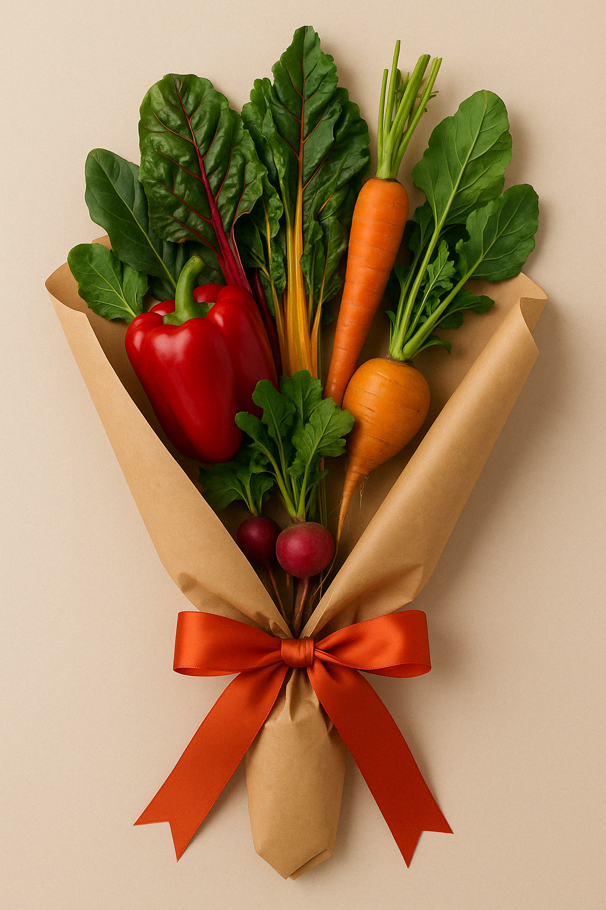

Groenten als cadeau: lokaal, duurzaam en net zo kleurrijk als bloemen. Met zorg gebundeld en feestelijk verpakt.
Bloemen zijn vaak geïmporteerd, bespoten en snel verwelkt. Groenten daarentegen zijn voedzaam, lokaal en veelzijdig. Een bosje groenten is niet alleen origineel, maar ook een statement voor duurzaamheid.
Wij gebruiken seizoensgroenten en verpakken alles in papier of herbruikbare materialen. Geen plastic, geen verspilling.
Met paprika, wortel, rode biet en snijbiet – een regenboog op je aanrecht.
Afhankelijk van het seizoen, altijd vers en lokaal van de markt of boerderij.